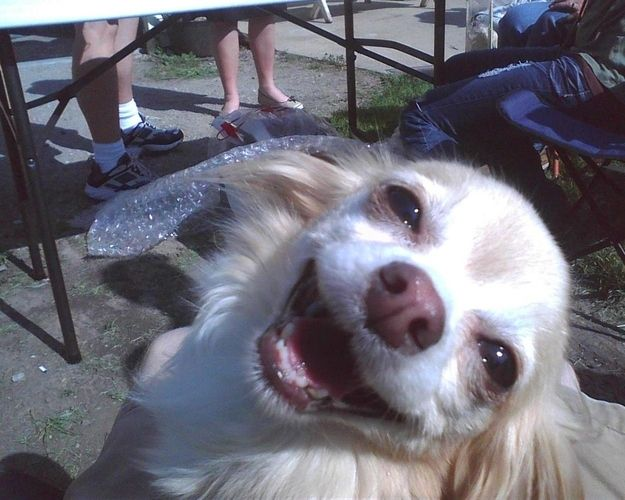

Adotar é para a vida toda.
Antes de receber um novo companheiro, é importante entender suas necessidades e estar preparado para oferecer uma vida segura, saudável e cheia de carinho.
Ver checklist de preparaçãoUma decisão que merece carinho e atenção
Compromisso para a vida
Um animal precisa de cuidado, atenção e responsabilidade durante toda a sua vida.
Ambiente seguro
Prepare sua casa, proteja janelas e portões e ofereça um espaço confortável para o pet.
Saúde em primeiro lugar
Vacinas, consultas veterinárias, alimentação adequada e higiene fazem parte dos cuidados.
Tempo e paciência
A adaptação pode levar tempo. Respeite o ritmo do animal e suas necessidades.
Faça esse checklist para receber seu novo amigo
Antes da chegada do animal, confira se você já organizou os itens essenciais para que ele se sinta acolhido e seguro.

Cada animal possui necessidades diferentes. Converse com um profissional veterinário para definir os cuidados adequados.
Uma rotina de carinho e responsabilidade
| Cuidado | Frequência sugerida | Importância |
|---|---|---|
| Água fresca | Diariamente | Manter a hidratação |
| Alimentação | Conforme orientação médica | Garantir nutrição adequada |
| Higiene do ambiente | Regularmente | Promover saúde e conforto |
| Atividades e brincadeiras | Todos os dias | Estimular bem-estar físico e mental |
| Acompanhamento veterinário | Conforme necessidade | Prevenir e acompanhar problemas de saúde |
*A frequência dos cuidados pode variar de acordo com a espécie, idade e condição de saúde do animal.
Perguntas frequentes e o que você precisa saber
Quanto tempo leva para um animal se adaptar?
O período de adaptação varia de acordo com cada animal. Alguns se acostumam rapidamente, enquanto outros precisam de mais tempo, paciência e tranquilidade.
Posso adotar mesmo sem experiência?
Sim! O importante é buscar informações, compreender as necessidades do animal e estar disposto a aprender sobre seus cuidados.
Quais são os custos de ter um pet?
Existem despesas com alimentação, higiene, vacinação, consultas veterinárias e outros cuidados que podem surgir ao longo da vida.
Como escolher o animal ideal para minha rotina?
Considere o espaço disponível, seu tempo, sua rotina e as características do animal. A escolha deve priorizar o bem-estar de todos.
O que fazer se o animal apresentar dificuldades de adaptação?
Ofereça um ambiente tranquilo, respeite seus limites e procure orientação veterinária ou de um profissional especializado em comportamento.
Pronto para transformar uma vida?
Conheça os animais que estão esperando por uma oportunidade e encontre seu novo companheiro.
Encontrar meu pet